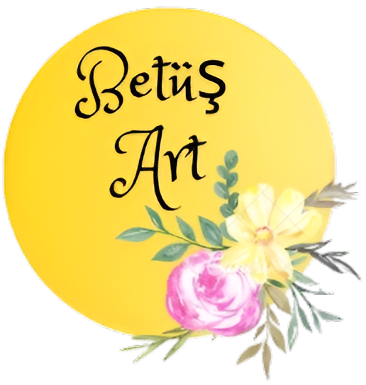

TOPRAKTAN, EL EMEĞİYLE.
El yapımı seramik, gündelik hayata bir dokunuş.
Kupa, fincan ve dekoratif seramikler.
Sakarya / Erenler’den, el emeğiyle.
KOLEKSİYON KATALOĞU
Sayfanın köşesinden tutup sürükleyin veya sayfaya tıklayın.

Betüş Art CeramicEL YAPIMI SERAMİKTOPRAKTAN, EL EMEĞİYLE.
Kupa, fincan ve dekoratif seramikler.
Sakarya / Erenler’den, el emeğiyle.
Sayfanın köşesinden tutup sürükleyin veya sayfaya tıklayın.